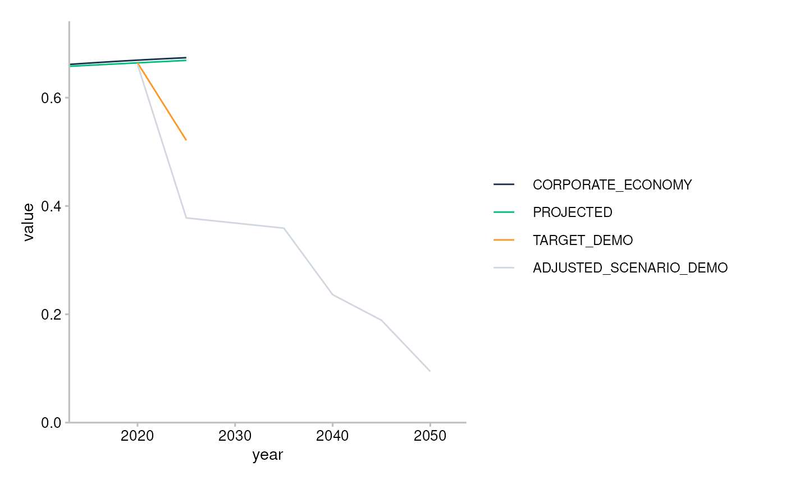

The goal of r2dii.plot is to help you plot 2DII data in an informative, beautiful, and easy way.
Installation
You can install the development version of r2dii.plot from GitHub with:
# install.packages("devtools")
devtools::install_github("2DegreesInvesting/r2dii.plot")Example
The r2dii.plot package is designed to work smoothly with other “r2dii” packages – r2dii.data, r2dii.match, and r2dii.analysis. It also plays well with the popular packages dplyr and ggplot2, which help you customize your plots.
Your data typically comes from the output of two functions in the r2dii.analysis package: target_sda() and target_market_share(). Here you’ll use two example datasets that come with r2dii.plot.
sda
#> # A tibble: 208 x 4
#> sector year emission_factor_metric emission_factor_value
#> <chr> <dbl> <chr> <dbl>
#> 1 automotive 2002 projected 0.228
#> 2 automotive 2003 projected 0.226
#> 3 automotive 2004 projected 0.224
#> 4 automotive 2005 projected 0.222
#> 5 automotive 2006 projected 0.220
#> 6 automotive 2007 projected 0.218
#> 7 automotive 2008 projected 0.216
#> 8 automotive 2009 projected 0.214
#> 9 automotive 2010 projected 0.212
#> 10 automotive 2011 projected 0.210
#> # … with 198 more rows
market_share
#> # A tibble: 1,170 x 8
#> sector technology year region scenario_source metric production
#> <chr> <chr> <int> <chr> <chr> <chr> <dbl>
#> 1 automotive electric 2020 global demo_2020 projected 145942.
#> 2 automotive electric 2020 global demo_2020 corporate_econ… 8134869.
#> 3 automotive electric 2020 global demo_2020 target_cps 145942.
#> 4 automotive electric 2020 global demo_2020 target_sds 145942.
#> 5 automotive electric 2020 global demo_2020 target_sps 145942.
#> 6 automotive electric 2021 global demo_2020 projected 148212.
#> 7 automotive electric 2021 global demo_2020 corporate_econ… 8183411.
#> 8 automotive electric 2021 global demo_2020 target_cps 148361.
#> 9 automotive electric 2021 global demo_2020 target_sds 160625.
#> 10 automotive electric 2021 global demo_2020 target_sps 149016.
#> # … with 1,160 more rows, and 1 more variable: technology_share <dbl>Before plotting, you need to prepare your data. The following sections show the preparation and plotting workflow for the three kinds of plots that r2dii.plot supports: timeline, techmix, and trajectory.
Timeline
The timeline plot uses sda-like data. First prepare it with prep_timeline(), then plot it with plot_timeline*().
Use prep_timeline() to prepare the data.
prep <- prep_timeline(sda)
prep
#> # A tibble: 208 x 7
#> sector year emission_factor_met… emission_factor_va… line_name value
#> <chr> <date> <chr> <dbl> <chr> <dbl>
#> 1 automoti… 2002-01-01 projected 0.228 projected 0.228
#> 2 automoti… 2003-01-01 projected 0.226 projected 0.226
#> 3 automoti… 2004-01-01 projected 0.224 projected 0.224
#> 4 automoti… 2005-01-01 projected 0.222 projected 0.222
#> 5 automoti… 2006-01-01 projected 0.220 projected 0.220
#> 6 automoti… 2007-01-01 projected 0.218 projected 0.218
#> 7 automoti… 2008-01-01 projected 0.216 projected 0.216
#> 8 automoti… 2009-01-01 projected 0.214 projected 0.214
#> 9 automoti… 2010-01-01 projected 0.212 projected 0.212
#> 10 automoti… 2011-01-01 projected 0.210 projected 0.210
#> # … with 198 more rows, and 1 more variable: extrapolated <lgl>For the “thick API”, we are experimenting with three ways to plot the prepared data. The main difference between them is if and how they allow recoding the values of line_name, which become the labels of the plot legend.
Regardless of the version, you’ll need to subset the data to meet the requirements of the plot_*() functions. If you don’t get it right, the error should guide you.
# Fails
plot_timelineA(prep)
#> Error: `data` must have a single sector. It has: automotive, aviation, cement, oil and gas, shipping, coal, steel
plot_timelineB(prep)
#> Error: `data` must have a single sector. It has: automotive, aviation, cement, oil and gas, shipping, coal, steel
plot_timelineC(prep)
#> Error: `data` must have a single sector. It has: automotive, aviation, cement, oil and gas, shipping, coal, steelThe error message suggests you need to pick only one sector, e.g. “cement”.
cement <- filter(prep, sector == "cement")-
plot_timelineA()defaults to recodingline_nameto title case, and allows custom recoding via a data frame passed to the argumentspecs.
# Default recoding
plot_timelineA(cement)
# Custom recoding
custom <- tribble(
~line_name, ~label, ~hex,
"projected", "Proj.", "#4a5e54",
"corporate_economy", "Corp. Economy", "#a63d57",
"target_demo", "Target (demo)", "#78c4d6",
"adjusted_scenario_demo", "Adj. Scenario (demo)", "#f2e06e",
)
plot_timelineA(cement, specs = custom) *
* plot_timelineB() plots line_name “as is”. You may recode line_name before passing the data, for example, with dplyr::recode().
# Recode `line_name` with `dplyr::recode()`
cement %>%
mutate(line_name = recode(line_name,
"corporate_economy" = "Corp. economy",
"projected" = "Proj.",
"target_demo" = "Target (demo)",
"adjusted_scenario_demo" = "Adj. Scenario (demo)",
)) %>%
plot_timelineB()
-
plot_timelineC()defaults to recodingline_nameto title case, and allows recoding via the argumentrecode, which can take multiple forms, including a function
plot_timelineC(cement, recode = toupper)